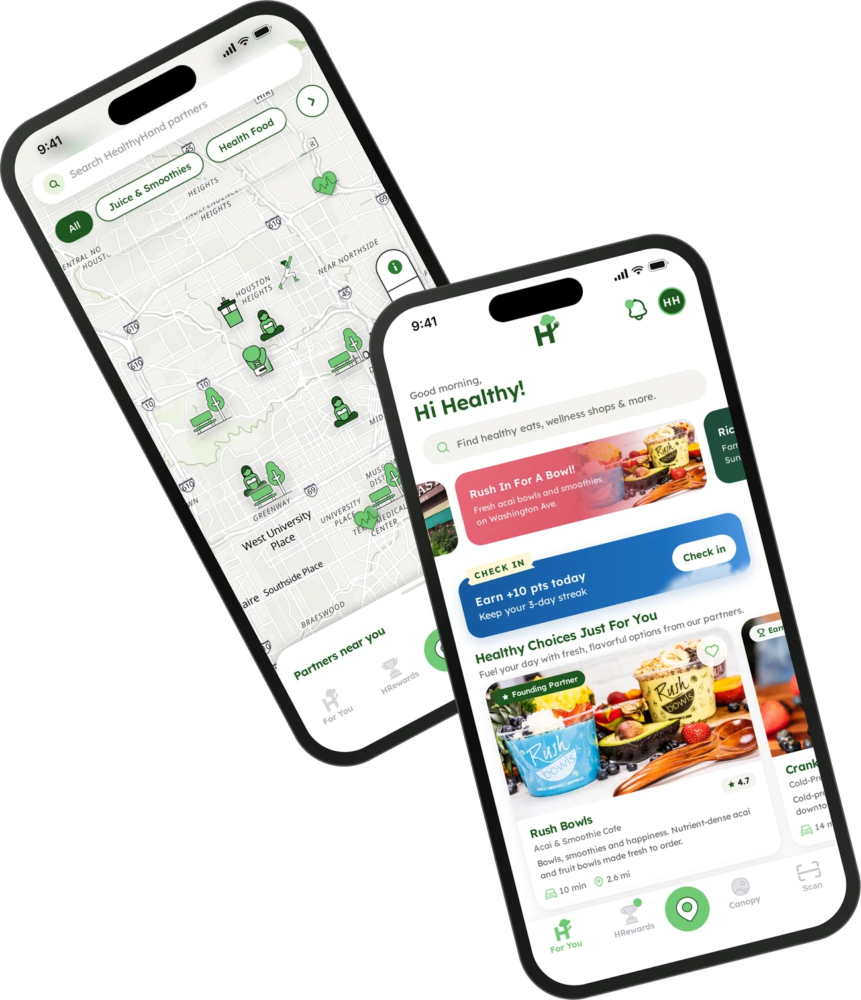
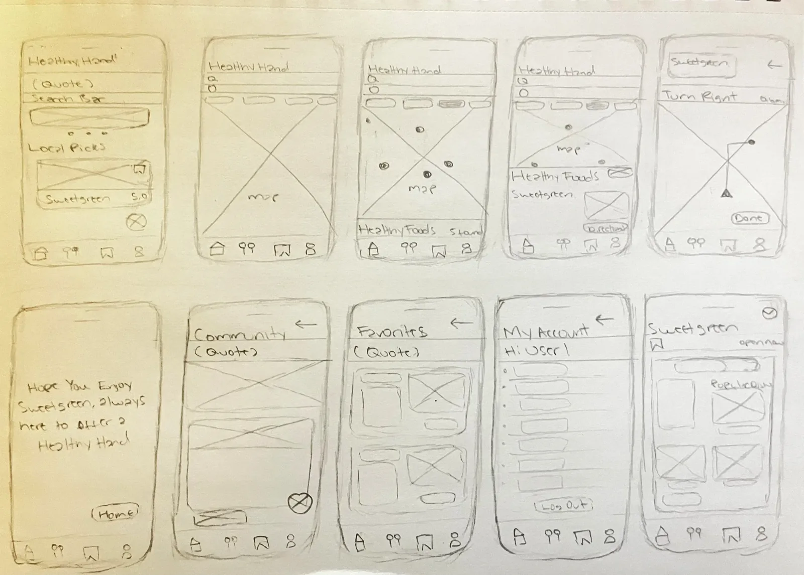
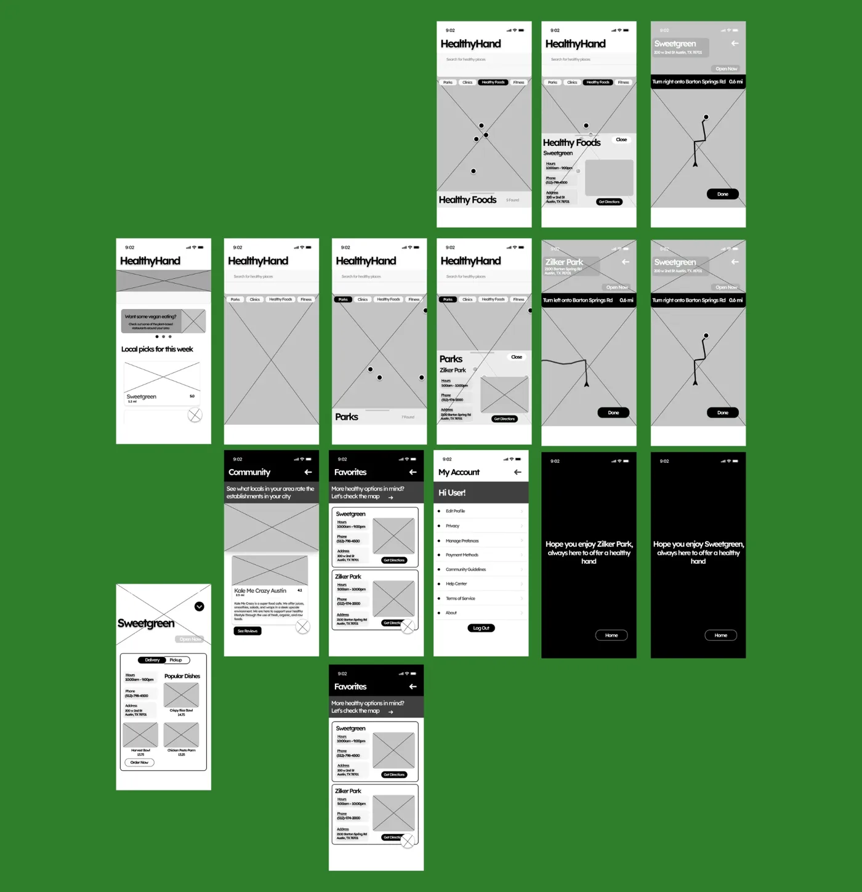
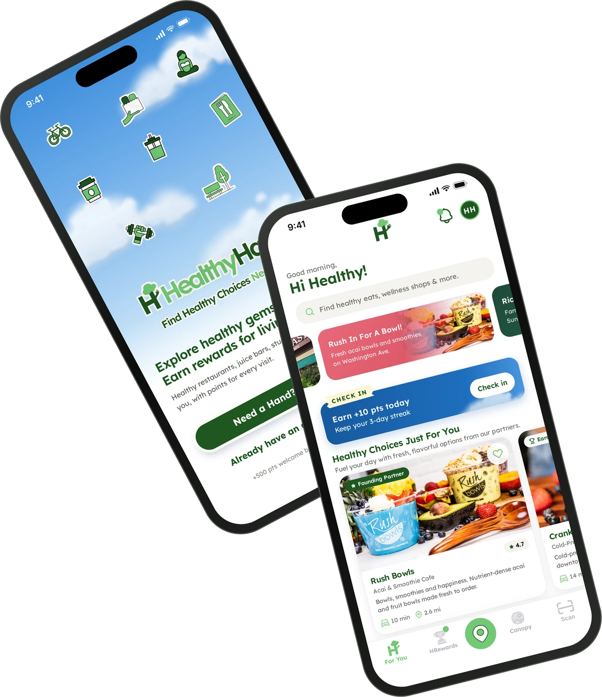

Building a healthier local ecosystem, one connection at a time.
HealthyHand is a wellness discovery platform that makes healthier living more accessible, while helping local health-focused businesses connect with their communities. I lead the product from concept to implementation, across product strategy, UX/UI, design systems, front-end and back-end development, and brand storytelling.

Role
Design Lead
Timeline
Oct 2025 – Present
Platform
iOS app, partner dashboard and backend
Built with
Figma, plus my own code for iOS, web and backend
The problem
Health-conscious people struggle to find healthy places nearby, and small wellness businesses struggle to be found.
What I own
Everything from strategy and research to the design system, the code for the app, dashboard and backend, and the brand.
Where it is
A working iOS app, partner dashboard and backend, piloting with local partner businesses in Houston.
01 Project introduction · Project overview
Overview
HealthyHand is more than a locator app; it’s a movement toward better living. By connecting people with health-focused businesses and services, we’re building a culture of wellness and sustainability. As the Design Lead for HealthyHand, I shaped the app’s experience and functionality. My responsibilities included:
User research & insights – interviews, surveys and usability testing to understand the needs of health-conscious people.
Experience design – wireframes, prototypes and high-fidelity designs for a seamless, engaging journey.
Information architecture – structuring navigation and layout so finding wellness services feels intuitive.
Accessibility & usability – an inclusive, easy-to-use platform that follows UX best practice and WCAG guidelines.
The HealthyHand launch film, which I directed and scored.
02 The problem · Project overview
The problem
Health-conscious people struggle to find reliable, convenient resources for discovering healthy places that support their goals.
They have trouble locating fitness studios, healthy restaurants, wellness centers and other places that fit their preferences and needs. This lack of easily accessible information keeps them from making informed choices and getting the most out of their efforts to improve their health.
02 The problem · Project overview
The solution
A people-centered platform that makes it easy to discover and reach a wide range of healthy places that support each person’s goals.
Through a seamless, intuitive experience, the app offers complete, up-to-date information on fitness studios, healthy eateries, wellness centers and more, wherever people are. By meeting the need for reliable, convenient resources, it helps people make informed decisions and fit healthy places into their lives, supporting their journey toward better health and well-being.
03 My role & approach
Product lead
Product
Vision, roadmap and priorities across both sides of the marketplace
Discovery with members and partner businesses
Success metrics and product analytics
Go-to-market with partners and local creators
Design
Research, personas and information architecture
UX/UI for the iOS app and the partner dashboard
The design system and accessibility standards
Brand, launch film and social content
Engineering
The iOS app, built from the design system
The partner dashboard
The backend: accounts, rewards and payments
Product analytics to guide the roadmap
03 My role & approach · Project overview
Design process
I followed a structured, research-driven process that kept people at the center while aligning with business goals.
03 My role & approach
What I built
One product with two sides: an app for members and a dashboard for the businesses they visit. I designed and built both.
Member app
An iOS app to discover healthy places nearby, join local wellness events and earn rewards for visits.
Partner dashboard
A web dashboard where local businesses see their visits and reward their regulars.
The platform behind them
Accounts, rewards and subscriptions, built so both sides stay in sync.
How the two sides connect
1
Discover
Members find a healthy spot nearby.
2
Visit
They go, and the visit counts.
3
Earn
Members earn rewards for living healthier.
4
Return
Businesses see who visits and bring their regulars back.
04 Research & insights · Empathize
User research
To begin, I ran research to understand the challenges people faced finding healthy places:
User surveys – to understand people’s day-to-day needs and frustrations.
Stakeholder workshops – with internal stakeholders, to align product goals with user needs.
User surveys
An online survey explored the experiences and preferences of people looking for healthy places such as gyms, restaurants and recreational areas, with responses across age groups and locations.
80%say improving their health is extremely or very important
88%look for healthy restaurants or cafés
76%look for fitness centers or gyms
52%look for parks or outdoor recreation
40%look for healthy grocery stores or markets
What we learned
Health matters. Improving health is highly important to participants, and healthy restaurants, cafés and gyms are where they look first.
Search and word of mouth. People rely on search engines and recommendations from friends and family; variety and a clean environment drive their choices.
The gap. Lack of information and limited options are the main challenges, and the opportunity for both people and local businesses.
04 Research & insights · Define
User insight & personas
From the research, I identified two core personas:
Hassan Ahmed
27 · Business Analyst
Hassan is a busy professional who spends long hours analyzing data and managing business insights for his company. He’s passionate about personal wellness, but his demanding schedule makes it hard to find health-conscious options quickly. He wants to make informed decisions about where to eat, exercise and access wellness services without spending hours researching.
Goals
Find healthy dining options near his office or home
Locate gyms, yoga studios or wellness centers that fit his schedule
Read trusted reviews from like-minded people
Save favorite places for later
Challenges
Struggles to find reliable, curated wellness spots in one place
Limited time to research health-focused businesses
Dislikes inconsistent or misleading online reviews
Hannah Johnson
30 · Marketing Manager
Hannah is a health-conscious professional who prioritizes a balanced lifestyle. She enjoys organic food, boutique fitness classes and sustainable shopping. As a marketing manager, she keeps an eye on trending wellness businesses and enjoys sharing her experiences with others.
Goals
Discover new health-conscious restaurants and cafés
Find holistic wellness services (acupuncture, mental health clinics, eco-friendly shops)
Support local, sustainability-focused businesses
Share reviews and recommendations with her network
Challenges
Hard to discover lesser-known, high-quality wellness businesses
Generic review platforms don’t focus on health-conscious consumers
Wants a community of like-minded people to swap recommendations
04 Research & insights · Define
From insight to design
Every core feature traces back to something we heard in research.
We heard88% look for healthy restaurants and cafés; 76% for gyms.
→
So we designedFor You leads with curated healthy picks, and the map filters by category in one tap.
We heardPeople rely on search and word of mouth.
→
So we designedA search bar at the top of home, and a rating, drive time and distance on every card.
We heardLack of information and limited options.
→
So we designedOne place for restaurants, studios, parks and clinics, including free places to stay active.
We heardHassan has little time to research.
→
So we designedEverything needed to decide is on the card, and favorites save places for later.
We heardHannah wants a like-minded community.
→
So we designedCanopy brings local wellness events and workshops into one calendar.
05 Design decisions · Ideate
Concept development
I led brainstorming sessions with the cross-functional team to generate solutions to the pain points we found. Together we developed these key features:
Map locator
Narrow down healthy places with popular prompts like parks, healthy food or clinics, or by search, to find a local spot for your healthy needs.
Personalized search & filters
Filter by category, such as organic food, mental health services, fitness, holistic wellness and eco-friendly stores.
Reviews & ratings
A trusted review system where people rate and share experiences, for transparency and credibility.
Save & favorite
Bookmark favorite places and build lists of go-to wellness spots.
Community
A social space to review healthy places people have visited, giving the community confidence to make informed decisions.
05 Design decisions · Ideate
Applying UX laws
Six UX laws guided HealthyHand’s usability, engagement and overall experience:
Hick’s Law
Simplify decision-making
People can feel overwhelmed searching for health-conscious businesses, so each screen offers fewer choices at once (for example, progressive filtering), making decisions faster and more intuitive.
Jakob’s Law
Familiar navigation patterns
People expect HealthyHand to work like the location apps they already use, such as Google Maps and Yelp. Familiar patterns like search, filters and an interactive map reduce the learning curve.
Fitts’s Law
Optimized tap targets
Search, filters and map pins are large and easy to tap, which matters most on a phone.
Miller’s Law
Chunking information
Business details, reviews and ratings are grouped into small sections with clear headings, so nothing feels like too much at once.
Aesthetic-Usability Effect
Trust through visual appeal
A clean, modern, friendly interface feels easier to use, and makes people more likely to trust the platform.
Doherty Threshold
Fast responses
Search and filters respond quickly, and loading states and skeleton screens keep people engaged when something takes longer.
05 Design decisions · Design
Prototyping
I created wireframes and interactive prototypes in Figma to bring the concepts to life, from paper sketches to high-fidelity designs with accessibility built in: adjustable font sizes, color contrast and screen reader support.
Paper wireframes
I started on paper to map the core journey quickly: home with local picks, the map with category filters, a place’s details, directions, and the community, favorites and account screens.

Low-fidelity prototypes
I then built grayscale prototypes in Figma to test the flow and structure before visual design: category filters on the map, a place’s hours and directions, turn-by-turn guidance, and a friendly arrival message.

05 Design decisions
Design system & build
Design system to code
I designed the components once and built them once. Every color, radius, shadow and type size is a token in tokens.css, and the buttons, chips, badges and cards are shared classes in components.css. Screens compose those pieces instead of styling themselves, so every screen stays consistent and accessible.
Talking directly with local business owners and health-conscious people surfaced real insights about accessibility, awareness and trust, so HealthyHand answers human needs rather than assumptions.
Simplicity drove engagement.
Applying Fitts’s, Miller’s and Hick’s laws reduced friction and cognitive load. People could find their way easily, explore quickly and focus on discovery instead of decision fatigue.
Community over convenience.
The biggest discovery wasn’t about finding healthy spots, it was about belonging. People wanted to feel connected to their local wellness community, which shaped Events, Favorites and Rewards and turned a directory into a lifestyle hub.
Design as an ecosystem builder.
HealthyHand became a bridge between local businesses and the people they serve: visibility for businesses, meaningful choices for members. It connects, not just informs.
Visual storytelling builds trust.
Calm colors, approachable type and warm imagery (the Aesthetic-Usability Effect) build credibility and emotional connection, which matters most for a health and wellness app.
07 Outcomes & reflection · Reflect
Next steps & reflection

HealthyHand is more than a local discovery app; it’s proof that design can shape culture by making healthy living visible, local and inspiring.
Next, I’m refining the bridge between the digital experience and people’s physical lives, turning every healthy choice into an opportunity for connection.